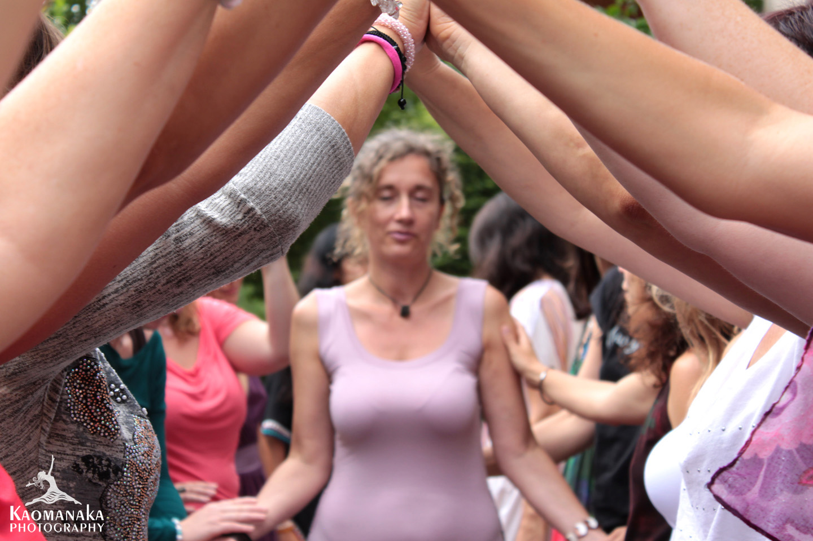
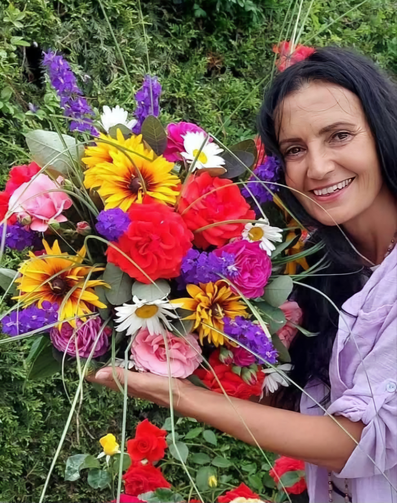
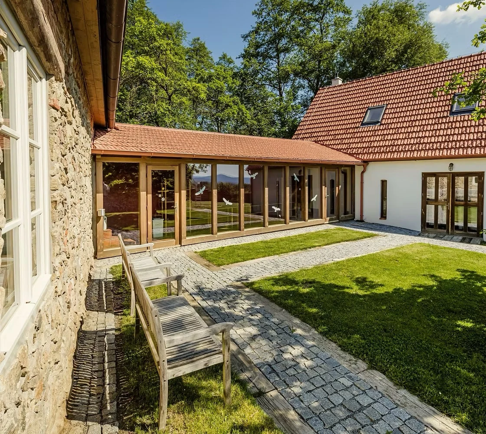
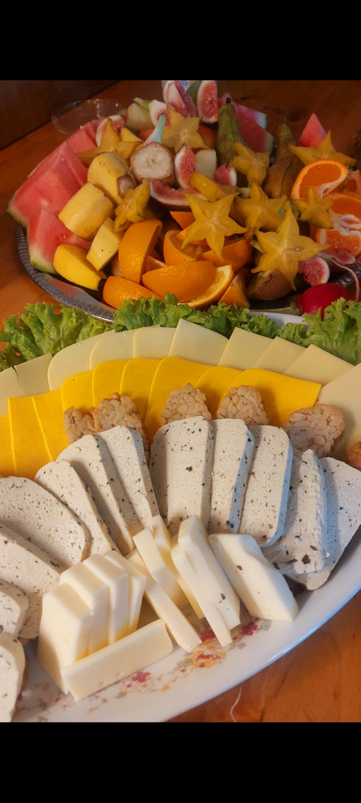

Zažij chrám ženského umění
Chrám ženské krásy, umění a doteku je jedinečný čtyřdenní letní modul Mysterijní školy ženství, kam tě srdečně zvu.
Je otevřen ženám, které touží poznat atmosféru školy a zažít ochutnávku její výuky i hloubky autentické tantrické cesty. Současně je srdečným setkáním žen, které školou již prošly a chtějí znovu spočinout v prostoru sesterství, sdílení a společné oslavy života.
Během čtyř dnů vytvoříme chrámový prostor plný krásy, vědomého doteku, tance, hudby, květin, tvořivosti a ženských rituálů.



Oslava ženství, krásy a radosti ze života
Bude to oslava ženství. Oslava života. Oslava umění být ženou.
Čas, kdy můžeš zpomalit, odpočinout si, nechat se hýčkat a znovu objevit svou přirozenou záři.
V prostoru ženské vzájemnosti můžeš vydechnout, spočinout sama v sobě a věnovat se tomu, co právě potřebuješ. Celý program je nabídkou a ty si můžeš vybrat, co chceš během společných dnů prožít.

Prožitky, které nikde jinde nezažiješ
Každý den přinese jedinečný prožitek. Čekají nás čtyři dny vědomého doteku, krásy, pohybu, tvořivosti a ženské vzájemnosti.


Rituál Umění tantrického doteku SHIVA–SHAKTI
Vědomý dotek jako cesta k hlubšímu vnímání těla, citlivosti, důvěře a harmonii ženského a mužského principu.
Rituál ženské krásy
Péče o pleť, dekolt a omlazující masáž obličeje, která probouzí přirozenou svěžest, jemnost a ženskou záři.
Umění tance chrámových kněžek
Tanec jako jazyk těla, meditace v pohybu a živoucí modlitba Nejvyšší Božské Existenci.
Zvuková lázeň křišťálových mís a gongu
Jana Teg Amrit a Muriel nás prostřednictvím léčivých vibrací pozvou do hluboké relaxace a rozšíří naše vědomí do kosmických i zemských světů.


A to je jen část toho, co společně prožijeme. Těšit se můžeš také na:
- Ochutnávku Mysterijní školy ženství pro nové ženy i radostné setkání absolventek.
- Božské ráno s integrální Tantra jógou, probouzením těla, dechu a vědomí a jemným vnímáním subtilních kosmických energií proudících naším tělem.
- Zpěvohraní a hru s hlasem, která probouzí autentický hlas, radost ze zpěvu a sílu vibrace.
- Taneční cestu Divoké Shakti s DJkou Mirrou a živým hudebním doprovodem, večer plný extáze, svobody, spontánnosti a radosti ze života.
- Posvátný oheň Sesterství a Vděčnosti za dar života se zpěvem, bubny a sdílením pod hvězdnou oblohou.
- Koupel v přírodním jezírku, hravost, osvěžení, uvolnění a hlubokou relaxaci v náruči přírody.
- Inspirativního hosta jako krásné překvapení letošního ročníku.
- Profesionální fotografování, díky kterému si odvezeš vzpomínku na svou vlastní záři.
Rituál Umění tantrického doteku
Vědomý dotek je cestou k lásce, přítomnosti a posvátnému spojení. Tantrický dotek je stavem vědomí a uměním být plně přítomna druhému člověku s otevřeným srdcem a čistým záměrem.
Rituál vychází z autentického tantrického učení Ma Anandy Sarity a navrací doteku jeho původní posvátný význam. Dotek se stává meditací, modlitbou a tichým vyjádřením lásky.
Žena se učí probouzet svou vrozenou citlivost, vnímavost a schopnost naslouchat tělu. Skutečná síla doteku vychází z hluboké přítomnosti, otevřeného srdce a schopnosti skutečně vnímat druhého.
Když se mysl utiší a tělo se uvolní, dotek přirozeně plyne jako proud života. Otevírá vznešený Erós – posvátnou životní sílu, která propojuje člověka s jeho duší a přináší do vztahu více něhy, úcty, důvěry a vědomé lásky.

Umění floristiky jako cesta ke kráse a harmonii
Každá žena v sobě nese vrozený dar tvořit krásu.
Umění floristiky probouzí cit pro harmonii, proporce, barvy, tvary a jemnou estetiku. Učí nás vidět krásu v květinách i v životě samotném.
Květiny miluji a cítím je. Byly mou profesí sedmnáct let a jsou pro mě dokonalým symbolem ženské krásy a Božské esence lásky. Naučím tě vytvořit elegantní kytici do vázy i jemnou kompozici inspirovanou japonským uměním ikebana.
Vytvořené kytice použijeme k výzdobě chrámového prostoru i osobních oltářů. Každá žena si odnese svou vazbu domů jako připomínku krásy, kterou v sobě probudila.

Krása je výživou pro duši. Květina i žena nám připomínají, že krása je přirozeným stavem bytí.
Vědomá přítomnost a energie Shakti

Umění přítomnosti
Celým setkáním nás bude provázet kultivace Umění přítomného okamžiku. Budeme rozvíjet schopnost vědomého pozorování, laskavé bdělosti a hlubokého spojení se sebou samými.

Energie Shakti
V bezpečném prostoru sesterství budeme podporovat soucítění, vzájemné oceňování, autenticitu, hravost i radost ze života. Společně vytvoříme prostředí, ve kterém se může energie Shakti přirozeně projevit jako tvořivost, láska, vitalita, intuice, jemnost i síla.

Posvátná životní síla
V tantrické tradici je erotická energie posvátnou životní silou a Božským zdrojem tvoření. Když ji žena přijme s úctou a vědomím, stává se světlem, které vyzařuje do všech oblastí jejího života.
Centrum Buchov
Letní speciál se uskuteční v nádherném prostředí Centra Buchov, rozprostřeného mezi posvátnými vrchy Velký a Malý Blaník. Tato krajina je od pradávna spojována s mimořádnou silou země a symbolicky propojuje energie mužského a ženského principu.
Okolní louky, lesy, čistá příroda a elegantní anglický styl celého areálu vytvářejí harmonický prostor pro spočinutí, regeneraci a návrat k vlastní podstatě. Je to místo, kde se ženské srdce přirozeně otevírá tichu, kráse, vznešenosti a blaženosti.


Hostina pro tělo i duši
Stejně láskyplná péče bude věnována také našemu tělu.
Naše milovaná kuchařka nám bude po celý pobyt připravovat výjimečnou vegetariánskou a veganskou kuchyni plnou čerstvých surovin, barev, vůní a hojnosti.
Každé jídlo bude malým uměleckým dílem a hostinou pro oči, tělo i srdce.
Tantra je umění plně procitnout do toho, kým skutečně jsi.— Ma Ananda Sarita
Dovol své duši nadechnout se
Přijeď na čtyři dny mezi ženy a odlož všechny své role. Nech se hýčkat. Tanči. Zpívej. Tvoř. Směj se. Spočiň v náruči přírody a dovol své duši nadechnout se.
Celý program je nabídkou a ty si můžeš vybrat, co chceš prožít. Uvolnění, plynutí, radost a přítomnost lásky jsou klíčem k ženské kráse. Na závěr si odvezeš profesionální fotografie a vzpomínku na ženu, kterou jsi ve svém nitru byla odjakživa.
Nesmírně se těším, milovaná ženo, že společně vytvoříme chrám plný ženské krásy, vědomí, lásky a radosti ze života.

Pokud cítíš, že tě toto prožitkové setkání volá, srdečně tě zvu do letního chrámového prostoru Mysterijní školy ženství.
21. 7. – 25. 7. 2027 • Centrum Buchov